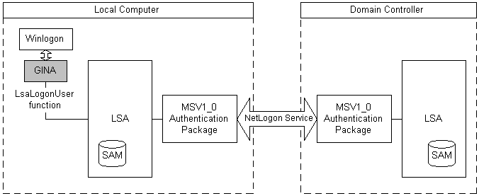

Microsoft provides the MSV1_0 authentication package for local machine logons that do not require custom authentication. The Local Security Authority (LSA) calls the MSV1_0 authentication package to process logon data collected by the GINA for the Winlogon logon process. The MSV1_0 package checks the local security accounts manager (SAM) database to determine whether the logon data belongs to a valid security principal and then returns the result of the logon attempt to the LSA.
MSV1_0 also supports domain logons. MSV1_0 processes domain logons using pass-through authentication, as illustrated in the following diagram.

In pass-through authentication, the local instance of MSV1_0 uses the Netlogon service to call the instance of MSV1_0 running on the domain controller. The domain controller's instance of MSV1_0 then checks the SAM database of the domain controller and returns the logon result to the instance of MSV1_0 on the local machine. The local version of MSV1_0 forwards the logon result to the instance of the LSA on the local machine.
If the domain controller is not available, and the LSA contains cached credentials for the user, the local instance of MSV1_0 can authenticate the user using the cached logon data.
The MSV1_0 authentication package also supports subauthentication packages. A subauthentication package is a DLL that can replace part of the authentication and validation criteria used by the MSV1_0 authentication package.
The MSV1_0 authentication package defines a primary credentials key/string value pair. The primary credentials string holds the credentials derived from the data provided at logon time. It includes the user name and both case-sensitive and case-insensitive forms of the user's password.
Â
Â